Version 0.1 · ideocentric
PartialFKR is an interactive sinusoidal analysis, editing, and resynthesis application. It analyzes audio files and represents the sound as a set of partials — individual frequency tracks that each carry a time-varying frequency and amplitude envelope. You can listen to the resynthesized audio, selectively mute or delete partials, and export the result to drive other instruments and synthesis environments.
PartialFKR is a spiritual successor to Michael Klingbeil’s SPEAR. Its analysis engine is based on Loris, an open-source library for sound morphing and transformation.
The core workflow is qualitative partial reduction:
The aesthetic goal is re-orchestration: hearing an implied source signal — its onsets, phonetic gestures, melodic shape — refracted through the timbre of an unrelated instrumental ensemble. Fidelity is not the goal; characteristic preservation through aggressive reduction is.
macOS: Open the .dmg, drag PartialFKR
to your Applications folder.
Windows: Run the NSIS installer (.exe) and
follow the prompts.
Linux: Install the .deb (Debian/Ubuntu) or
.rpm (Fedora/RHEL) package for your architecture.
When PartialFKR first launches, it opens an empty project window ready to receive an audio file for analysis. The canvas displays an “Open a file to analyse” link in green. Clicking it opens the Analyze Audio file picker directly — the same action as File → Analyze Audio….
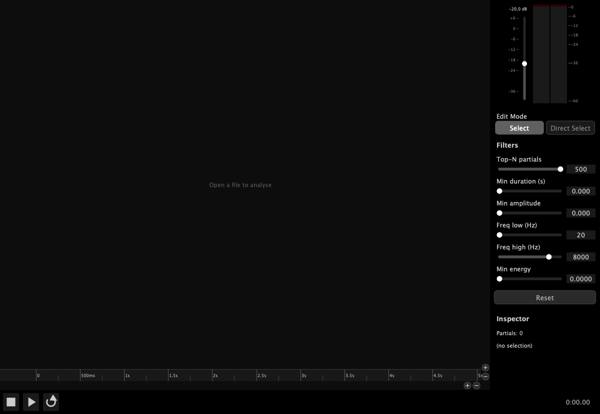
After loading a project or completing an analysis, the interface is divided into three main areas:
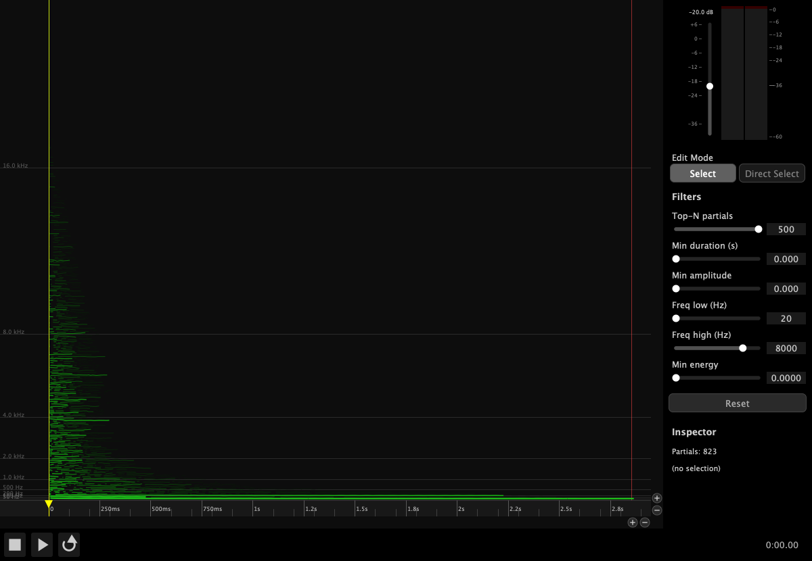
| Area | Description |
|---|---|
| Partial Canvas (center) | The main editing area. Partials are displayed as colored lines, with time on the horizontal axis and frequency (Hz) on the vertical axis. Line brightness and weight reflect amplitude. |
| Transport Bar (bottom) | Play, Pause, Stop, and Loop buttons; time display; In and Out markers. |
| Right Panel (right edge) | Output gain fader, stereo level meter, and a tabbed panel with two tabs. Tools tab: edit mode buttons, marker buttons, and operation buttons. Filters tab: reduction filter sliders and the Inspector. Can be hidden with ⌘⌥S. |
The right panel uses a tabbed layout. The Tools tab (default) contains all interactive editing controls. The Filters tab contains the reduction sliders and Inspector.
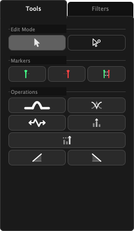
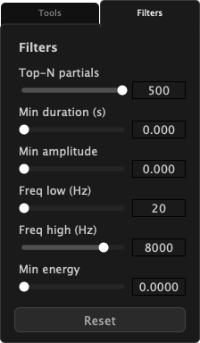
The following annotated images label each area and control:
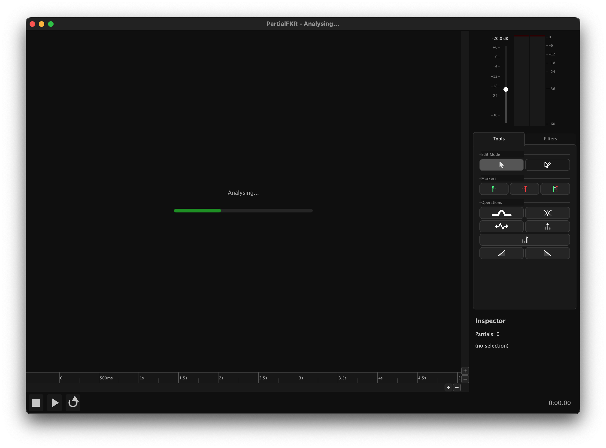
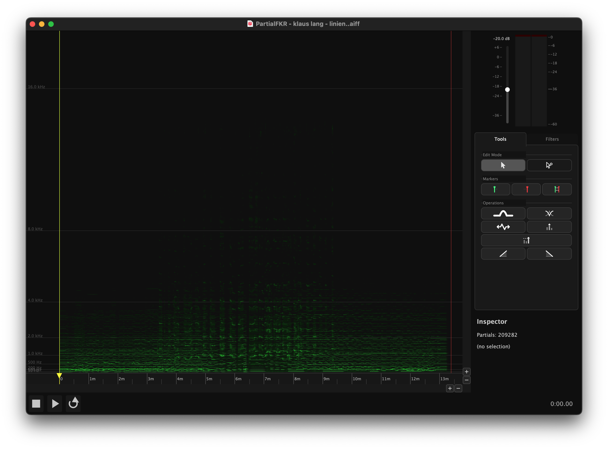
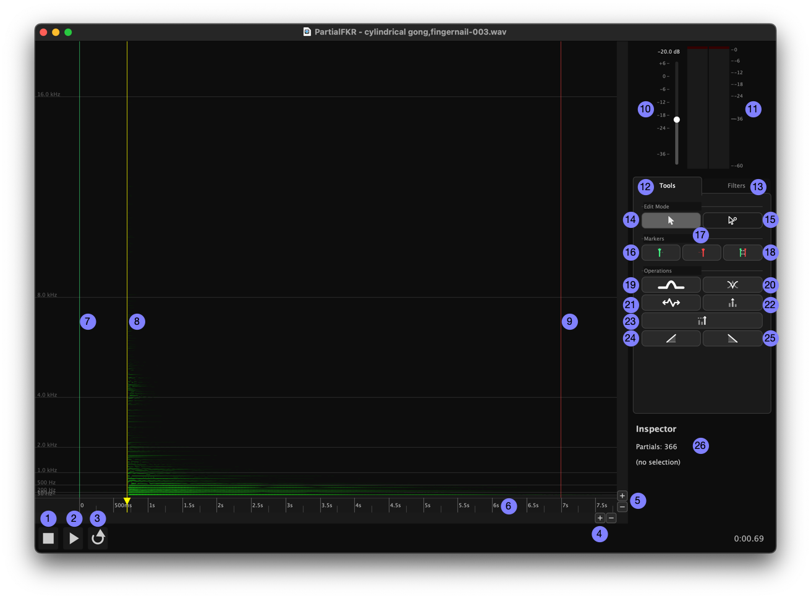
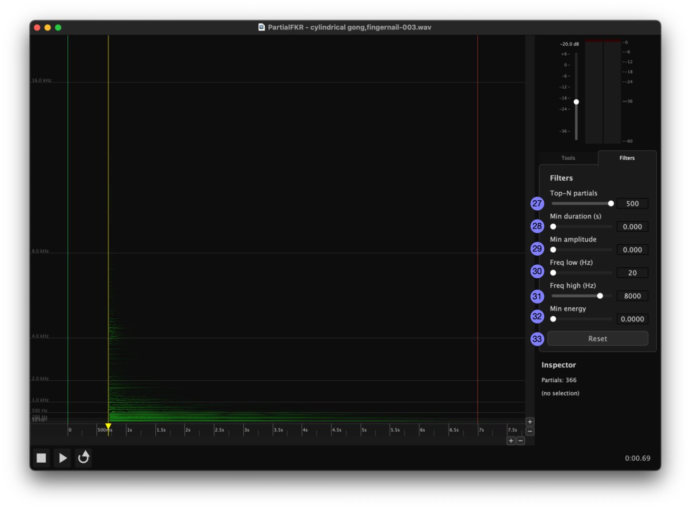
Interface legend:
| # | Control | Location |
|---|---|---|
| 1 | Stop | Transport bar |
| 2 | Play / Pause | Transport bar |
| 3 | Loop | Transport bar |
| 4 | Horizontal zoom (time axis) | Canvas — bottom-right chrome |
| 5 | Vertical zoom (frequency axis) | Canvas — right chrome |
| 6 | Timeline / ruler | Canvas — bottom strip |
| 7 | In marker | Canvas ruler |
| 8 | Scrub handle | Canvas ruler |
| 9 | Out marker | Canvas ruler |
| 10 | Output gain fader | Right panel — top |
| 11 | Stereo level meter | Right panel — top |
| 12 | Tools tab | Right panel tab bar |
| 13 | Filters tab | Right panel tab bar |
| 14 | Select mode button | Tools tab — Edit Mode section |
| 15 | Direct Select mode button | Tools tab — Edit Mode section |
| 16 | Set In marker button | Tools tab — Markers section |
| 17 | Set Out marker button | Tools tab — Markers section |
| 18 | Mark Selection button | Tools tab — Markers section |
| 19 | Bridge Partials button | Tools tab — Operations section |
| 20 | Crossfade Overlap button | Tools tab — Operations section |
| 21 | Time Stretch / Compress button | Tools tab — Operations section |
| 22 | Amplitude Scale button | Tools tab — Operations section |
| 23 | Normalize button | Tools tab — Operations section |
| 24 | Fade In button | Tools tab — Operations section |
| 25 | Fade Out button | Tools tab — Operations section |
| 26 | Inspector | Filters tab |
| 27 | Top-N partials slider | Filters tab |
| 28 | Min Duration slider | Filters tab |
| 29 | Min Amplitude slider | Filters tab |
| 30 | Frequency Low slider | Filters tab |
| 31 | Frequency High slider | Filters tab |
| 32 | Min Energy slider | Filters tab |
| 33 | Reset button | Filters tab |
File → Analyze Audio… opens a file picker. You can also click the “Open a file to analyse” link displayed in the center of an empty canvas. Select a WAV or AIFF file. PartialFKR will analyze it using sinusoidal modeling and populate the canvas with the resulting partials. Analysis time depends on file length; a progress indicator is shown during analysis.
Once analysis is complete, the window title updates to show the source filename and the proxy icon is set to the audio file.
Note: A project can only hold one analyzed audio file. Once analysis is complete, the Analyze Audio menu item is disabled for that window. Open a new window (⌘N) to analyze a second file.
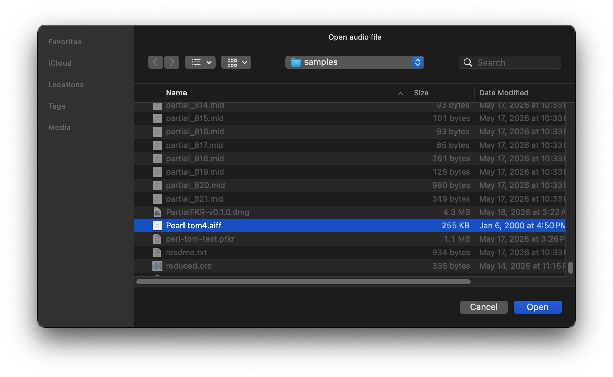
File → Open… (⌘O) opens a .pfkr project
file. A .pfkr file stores the complete partial set,
reduction filter settings, zoom state, and other view parameters. It
does not store the original audio.
On macOS, you can also double-click a .pfkr file in
Finder, or drag it onto the PartialFKR dock icon.
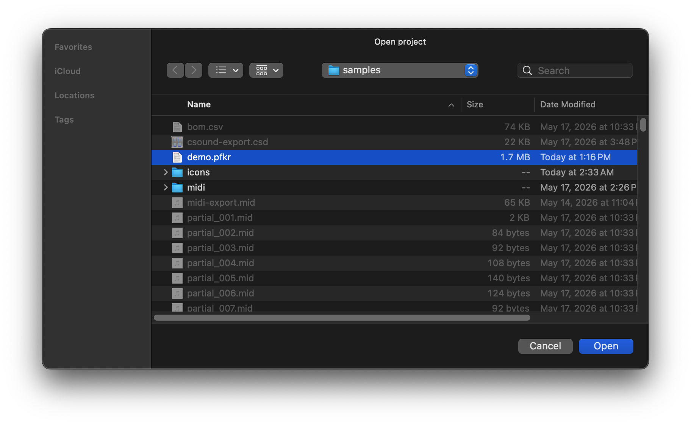
Opening into a specific window: If the frontmost window has no partials loaded, the file is opened into that window. If the window already has content, a new window is created.
After the application has been run at least once, .pfkr
files will show “Open with PartialFKR” in Finder’s context menu.
Double-clicking a .pfkr file opens it directly in
PartialFKR.
| Command | Key | Behavior |
|---|---|---|
| Save | ⌘S | Saves to the current .pfkr file. If the project has
never been saved, falls through to Save As. |
| Save As… | ⌘⇧S | Prompts for a new filename and saves. |
After a successful save, the window title updates to the project
filename and the macOS proxy icon points to the .pfkr
file.
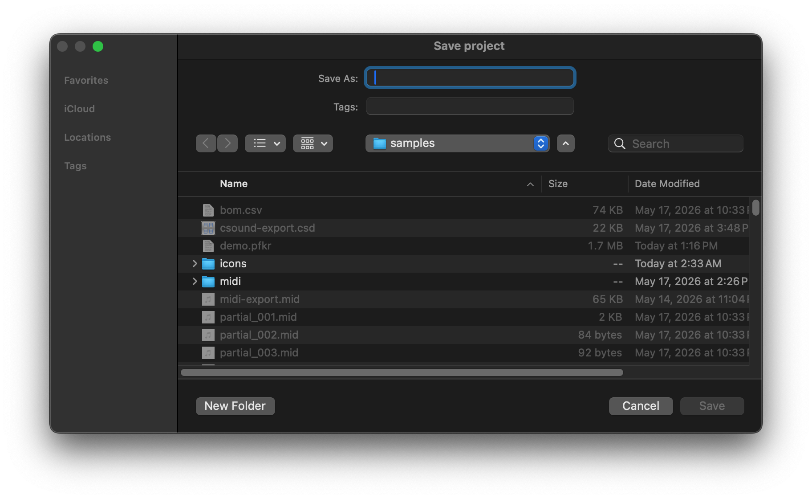
If you close a window or quit the application with unsaved changes, a dialog appears:
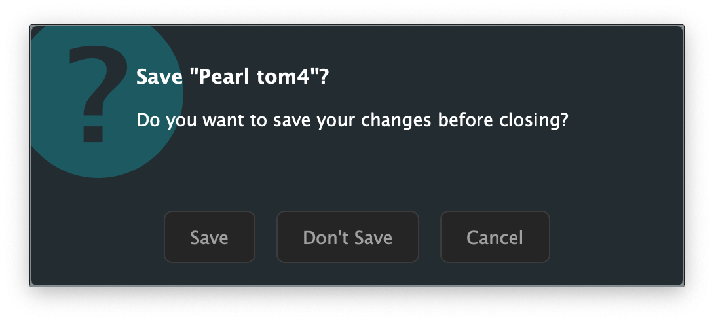
When quitting with multiple dirty windows open, each window is handled in sequence. Cancelling any one of them aborts the quit.
The canvas plots partials as colored lines:
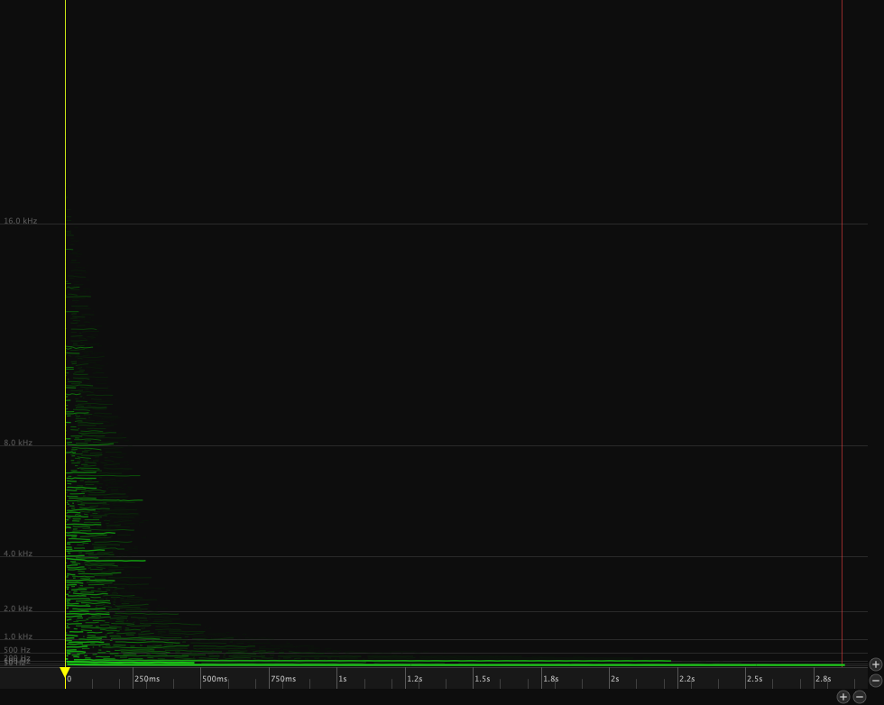
Zoom
All scroll-based zoom is anchored at the cursor position.
| Action | Effect |
|---|---|
| Scroll / wheel | Zoom frequency axis (vertical) |
| ⌘+scroll or ⌥+scroll | Zoom time axis (horizontal) |
| Pinch (trackpad) | Zoom both axes together |
| ⌘= | Zoom in (time axis) |
| ⌘− | Zoom out (time axis) |
| ⌘0 | Zoom to fit — shows all partials |
The zoom buttons in the canvas chrome perform the same operations: the pair in the bottom-right zoom the time axis, the pair on the right zoom the frequency axis.
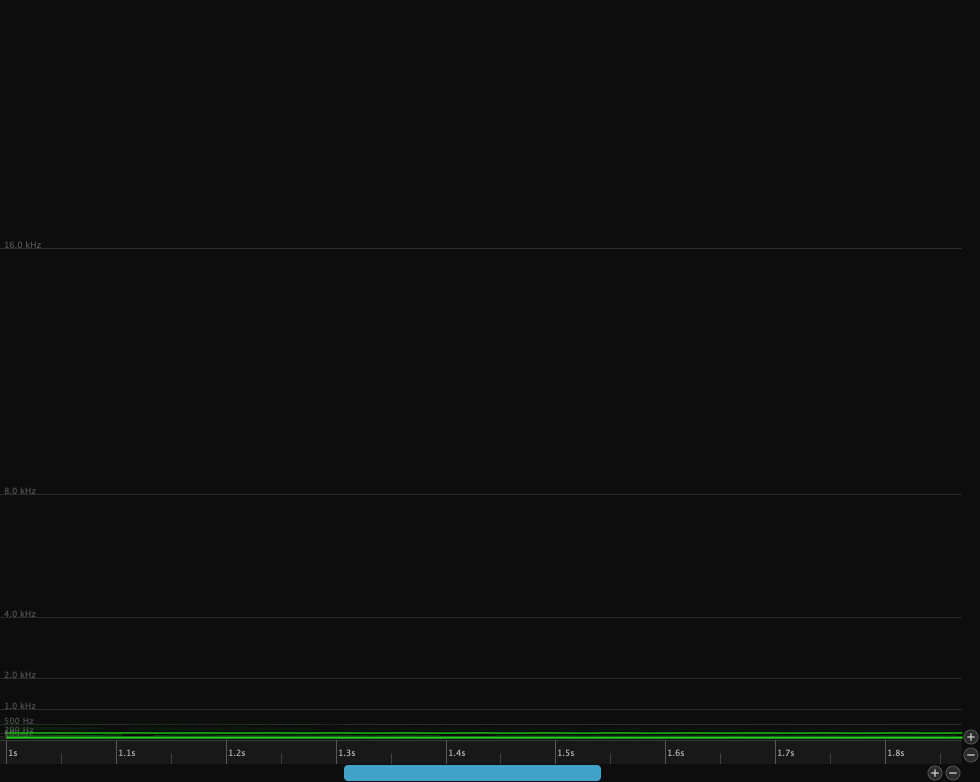
Pan
| Action | Effect |
|---|---|
| ⇧+scroll | Pan time (horizontal) |
| Arrow keys | Pan time (← →) or frequency (↑ ↓) |
| Page Up / Down | Pan frequency up / down by one page |
| Home / End (or ⌘← / ⌘→) | Jump playback to file start / end (view follows) |
| Drag empty canvas area | Pan time and frequency |
The yellow vertical line indicates the current playback position. Click anywhere on the ruler (the time strip at the bottom of the canvas, item 6) to reposition the playhead. Dragging the playhead handle (item 8) scrubs audio.
| Button | Key | Action |
|---|---|---|
| ▶ Play (item 2) | Space | Start playback from the current playhead position |
| ⏸ Pause (item 2) | Space | Pause playback (retains position) |
| ⏹ Stop (item 1) | — | Stop playback and return to the in-point |
Playback can also be started by pressing Space anywhere in the canvas.
Go to Start / End — jump the playhead to either end of the file. The view scrolls to follow.
| Menu | Key | Action |
|---|---|---|
| Transport → Go to Start | ⌘← (or Home) | Move the playhead to the beginning of the file |
| Transport → Go to End | ⌘→ (or End) | Move the playhead to the end of the file |
Click the Loop button (item 3) or use Transport → Loop to enable looped playback. When loop is on, playback restarts at the beginning automatically.
Hold Option (⌥) and drag the playhead handle (item 8) to scrub through the audio. The canvas and synth follow the drag position in real time. When you release, playback resumes from the scrub position.
The In marker (item 7) and Out marker (item 9) define the active play region on the canvas ruler. Drag them to set the range; playback starts from the In point and stops (or loops) at the Out point. Use Stop to return to the In point.
You can also set the markers from the keyboard, the Transport menu, or the marker buttons in the Tools tab (items 16–18):
| Action | Shortcut | Menu | Button |
|---|---|---|---|
| Set In Point to playhead | ⌥I | Transport → Set In Point | Item 16 |
| Set Out Point to playhead | ⌥O | Transport → Set Out Point | Item 17 |
| Set In/Out to span selection | ⌥S | Transport → Set In/Out from Selection | Item 18 |
Set In/Out from Selection (item 18) is enabled only when one or more partials are selected; it sets the In marker to the earliest breakpoint and the Out marker to the latest breakpoint across the selection.
The output gain fader (item 10) and stereo level meter (item 11) are at the top of the right panel, above the tab bar. The fader controls master output gain (−40 to +6 dB, default −20 dB). The meter shows peak output with hold indicators and clip lights.
Click the clip lights to reset them after a peak-clipping event.
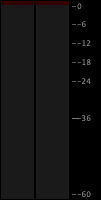
When partials are selected, only the selected partials are audible during playback. This makes it easy to isolate specific partials and assess their contribution. Deselect all partials to hear the full (unfiltered) resynthesis.
PartialFKR has two selection modes, chosen with keyboard shortcuts or the Edit Mode buttons (items 14–15) in the Tools tab of the right panel.
Select mode operates on whole partials.
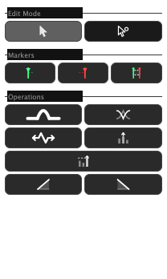
| Action | Result |
|---|---|
| Click a partial | Select it (deselects others) |
| ⌘+click | Add/remove from current selection |
| Drag from empty area | Rubber-band: select all partials whose time range intersects the rectangle |
| ⌘+drag | Add/remove from selection by rectangle |
| Click empty area | Deselect all |
Selected partials are highlighted with a yellow tint.
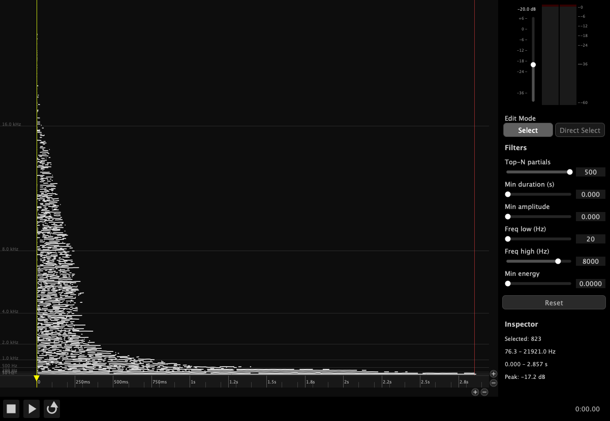
Direct Select mode operates on individual breakpoints — the control points that define a partial’s trajectory.
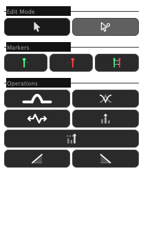
| Action | Result |
|---|---|
| Click a breakpoint | Select it |
| ⌘+click | Add/remove a breakpoint from selection |
| Drag from empty area | Rubber-band: select all breakpoints in the rectangle |
| Drag a selected breakpoint | Move it to a new time/frequency position |
Breakpoints are displayed as small dots on each partial when Direct Select mode is active. Selected breakpoints are highlighted.
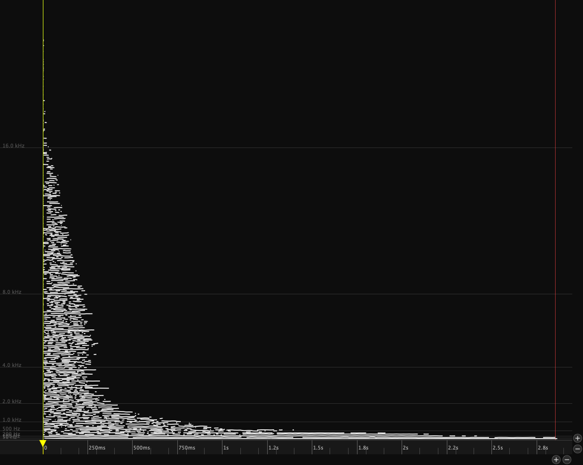
These commands operate in the current mode (whole partials or breakpoints):
| Command | Key |
|---|---|
| Select All | ⌘A |
| Deselect All | ⌘⇧A |
| Invert Selection | ⌘⇧I |
All editing operations are undoable. Use ⌘Z to undo and ⌘⇧Z to redo.
| Command | Key | Notes |
|---|---|---|
| Copy | ⌘C | Copies selected partials (with full breakpoint data and color) to the clipboard |
| Cut | ⌘X | Copies then deletes |
| Paste | ⌘V | Pastes at the position last clicked in the canvas background |
Cross-window paste: The clipboard is shared across all open windows. Copy in one window and paste into another. To set the paste position in the destination window, click the canvas background before pasting.
Press Delete or Backspace to delete: - In Select mode: removes the selected partials entirely - In Direct Select mode: removes the selected breakpoints from their partials
Deletion is undoable.
PartialFKR maintains a full undo history for all structural edits (delete, paste, stretch, normalize, bridge, crossfade, fade). Use ⌘Z / ⌘⇧Z, or the Edit menu.
The Edit menu shows a description of the next undo/redo operation (e.g., “Undo Delete”).
Press T, click the Stretch button (item 21), or use Edit → Stretch / Compress… to time-scale the selected partials or breakpoints.
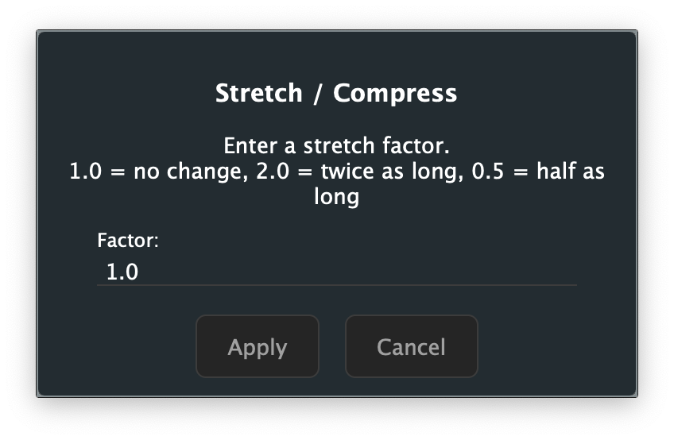
Enter a factor: - 1.0 — no change - 2.0 — twice as long (slowed down) - 0.5 — half as long (sped up)
The operation anchors to the earliest start time in the selection. Stretch is undoable.
Click the Normalize button (item 23) or use Edit → Normalize to scale all unmuted partials so the loudest peak in the resynthesized output reaches 0 dBFS. This is useful after heavy reduction, when the remaining partials may be much quieter than the original.
Normalize is undoable and runs asynchronously — a brief pause may occur on large partial sets.
Click the Amplitude Scale button (item 22) or use Edit → Scale Amplitude… to open a dialog to multiply all unmuted partial amplitudes by a specific factor.
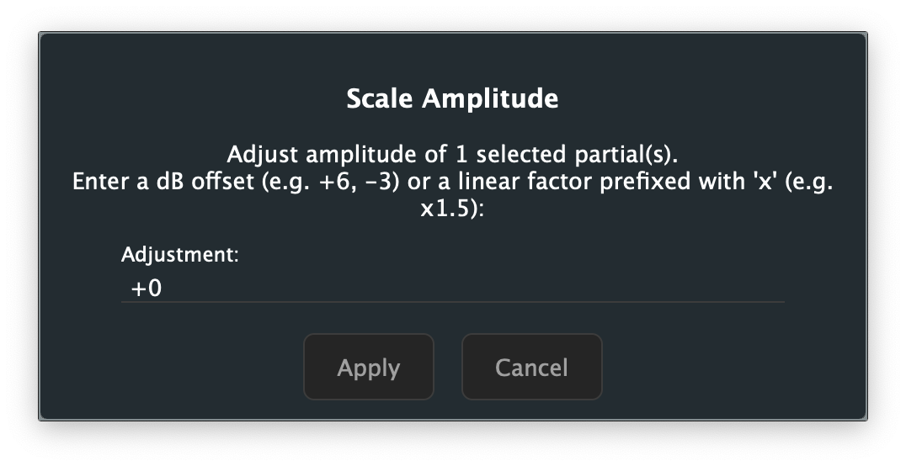
Enter the adjustment as a dB offset (e.g. +6,
−3) or as a linear multiplier prefixed with x
(e.g. x1.5). Scale Amplitude is undoable.
The Fade In (item 24) and Fade Out (item 25) buttons apply an amplitude envelope to the selected partials, ramping from silence over the region between the In marker and Out marker.
Note: Both buttons are enabled only when a valid In/Out range is set (Out marker is after In marker) and partials are selected. Set your In and Out markers before applying a fade.
Both operations insert breakpoints at the In and Out marker positions and scale amplitudes across the range. They are undoable.
The Filters tab of the right panel contains six sliders (items 27–32) that instantly hide partials meeting threshold criteria. Filtered partials are muted in real time; you can hear the effect immediately during playback.
Filtering is non-destructive: partials are hidden, not deleted. Use the Reset button (item 33) to restore all partials.
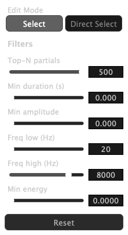
The typical reduction workflow:
Retains only the N loudest partials (by peak amplitude). All other partials are muted.
Hides partials shorter than the threshold duration.
Hides partials whose peak amplitude falls below the linear threshold.
Use these together to isolate a specific frequency range. For example, set Freq low to 200 Hz and Freq high to 4000 Hz to hear only midrange partials.
Hides partials with very little total energy (amplitude × duration).
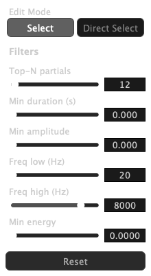
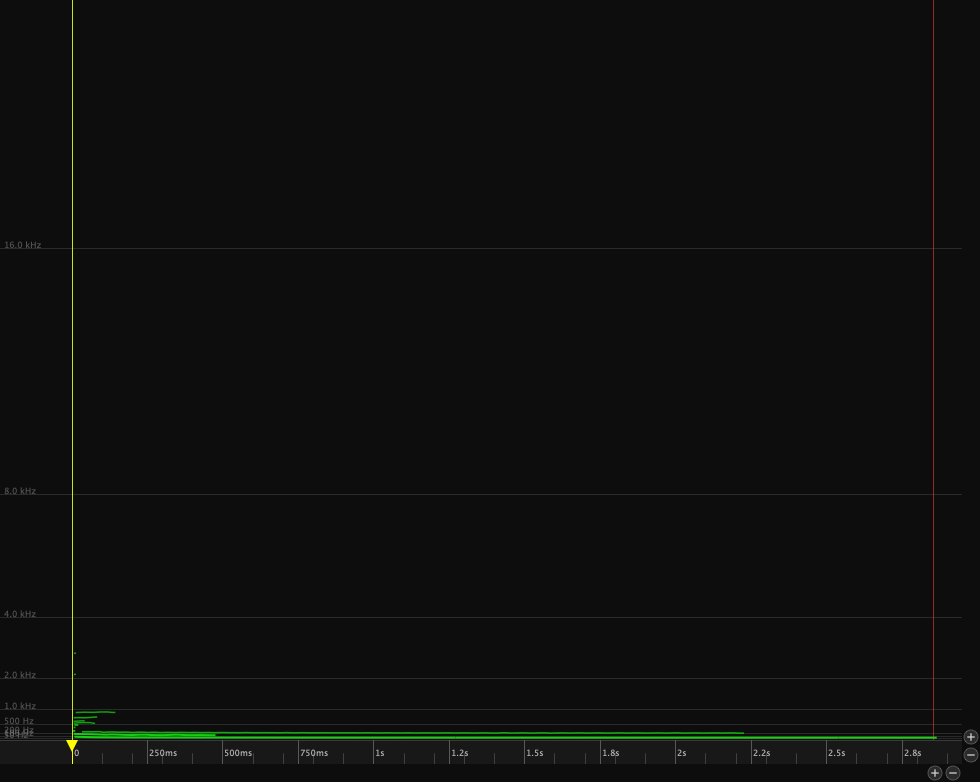
The Reset button clears all six filter sliders to their defaults, restoring all muted partials to audibility.
Gap operations combine two separate partial fragments into a single continuous partial. Both operations are undoable.
Bridges the gap between two partial fragments that should be continuous but were separated because the amplitude dropped below the analysis threshold.
Triggering in Select mode: Select exactly two partials where one ends before the other begins (a gap exists between them). Press ⌘J or click the Bridge button (item 19).
Triggering in Direct Select mode: Select one breakpoint from each of two different partials. Press ⌘J.
What it does: Linearly interpolates frequency and amplitude at 5 ms intervals across the gap, producing a smooth connection between the two fragments. The two originals are replaced by a single merged partial.
Tip: If ⌘J is greyed out, check that exactly two partials are selected, that they do not overlap in time, and that one ends before the other begins.
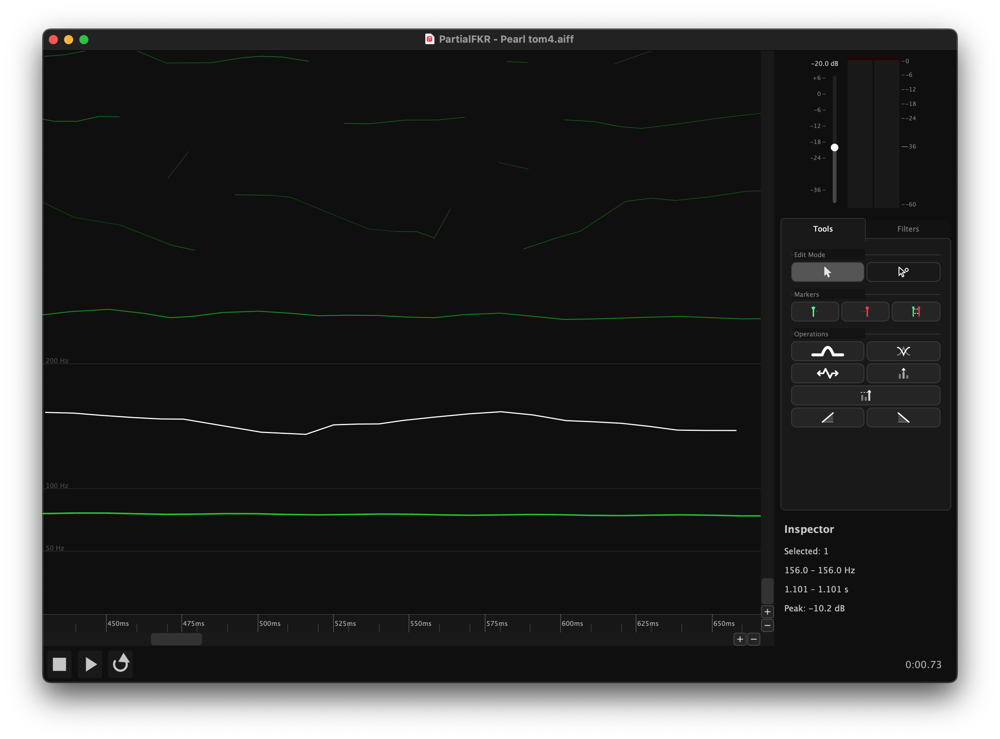
Blends two overlapping partials into a single continuous partial by crossfading the overlap region.
Triggering: Same as Bridge Partials, but the two selected partials must overlap in time (the first has not ended when the second begins). Press ⌘⇧J or click the Crossfade button (item 20).
What it does: In the overlap region, amplitude is weighted so that the first partial fades out while the second fades in. Frequency is interpolated throughout. The result is a single merged partial with no abrupt transitions.
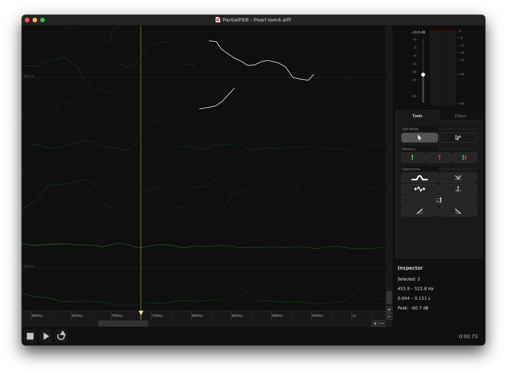
The Inspector panel (item 26) is located in the Filters tab and shows summary statistics about the current selection.
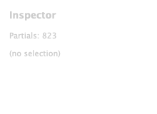
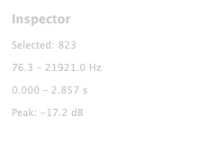
| Field | Description |
|---|---|
| Partials | Number of selected partials (or total if nothing is selected) |
| Frequency range | Lowest and highest fundamental frequency across the selection |
| Duration | Time span from earliest onset to latest offset |
| Peak amplitude | Maximum amplitude value across the selection |
The Inspector updates immediately as the selection changes.
All export formats operate on the unmuted partials only — muted and filtered partials are excluded. If any partial is soloed, only soloed partials are included.
Export Audio renders the resynthesis directly to a playable audio file. The other formats export partial data for use in external tools such as Csound, a DAW, or SPEAR.
Access all export options via File → Export.
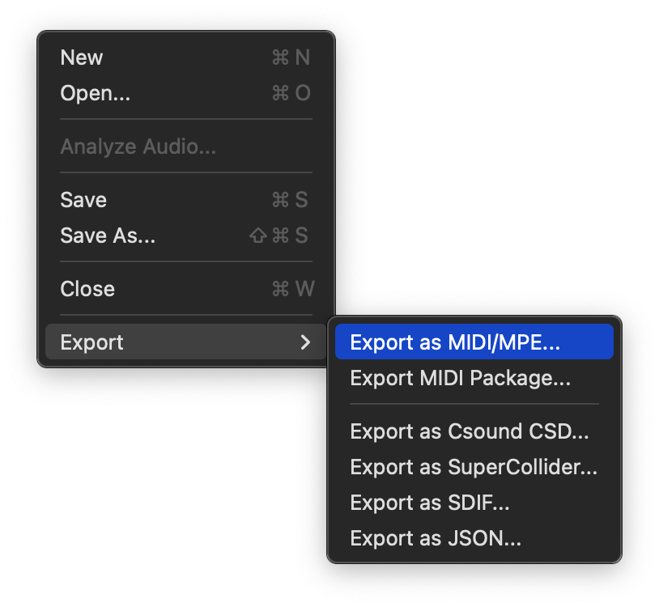
Exports all partials as a single MPE (MIDI Polyphonic Expression) MIDI file, with one note per partial.
Each partial becomes a note with: - Pitch bend updated frame-by-frame to track the partial’s frequency - CC11 (Expression) updated frame-by-frame to track amplitude - Note-on velocity derived from the initial amplitude
Before the file is saved, a dialog asks you to choose a pitch bend range (±2, ±12, ±24, or ±48 semitones). The dialog shows the percentage of partials that fit within each range, helping you choose the minimum range that covers your material without sacrificing resolution.
Tip: Use ±12 semitones for lightly pitched material; ±48 for highly chromatic or atonal content.
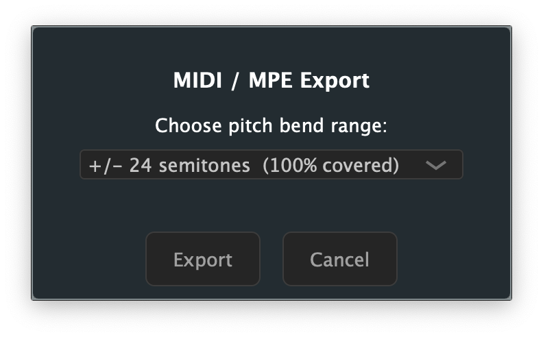
Exports one MIDI file per partial, plus a Bill of Materials (BOM) CSV and a readme, all into a folder you choose.
The BOM CSV contains one row per partial with columns: filename, start time, end time, duration, frequency range, amplitude range (dB), peak velocity, bend range used, maximum pitch deviation (cents), and total energy. This data is useful for routing partials to specific instruments or voices in a DAW.
Files are named partial_001.mid,
partial_002.mid, etc. (zero-padded).
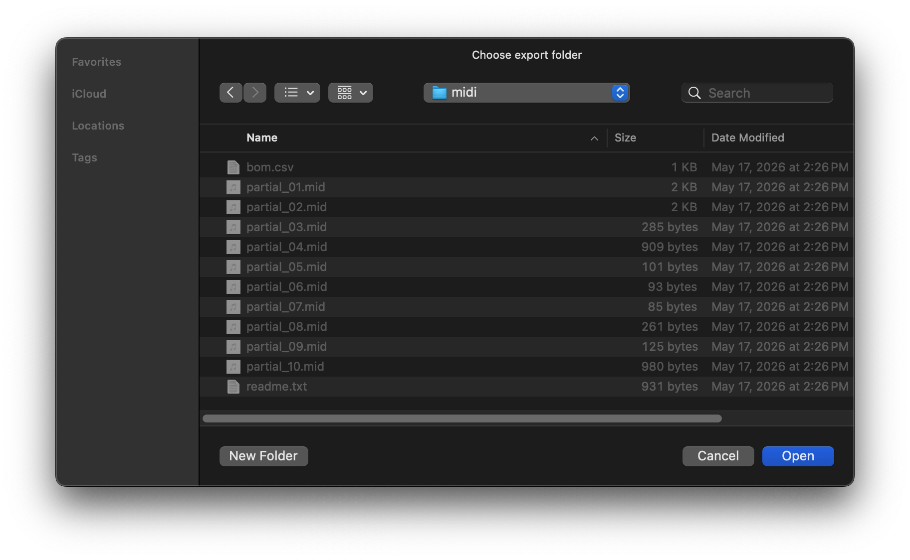
Exports a self-contained Csound CSD file that exactly reproduces the resynthesis when run with Csound.
The generated file uses one pair of GEN07 function tables per partial
(frequency envelope + amplitude envelope), read with a
BufRd-equivalent instrument. Tempo and sample rate match
PartialFKR’s settings (default 48 kHz, 5 ms control period).
To use: Open the .csd in the Csound IDE
or run from the terminal: csound output.csd
Exports a self-contained SuperCollider
.scd file. Open it in the SuperCollider IDE and
evaluate the outer block (⌘Return on macOS) to boot the server, load
buffers, and play back the resynthesis.
The script uses Env.asSignal to discretize each
partial’s breakpoint envelope into a server buffer at 5 ms resolution,
then schedules one Synth per partial at its analysis onset
time.
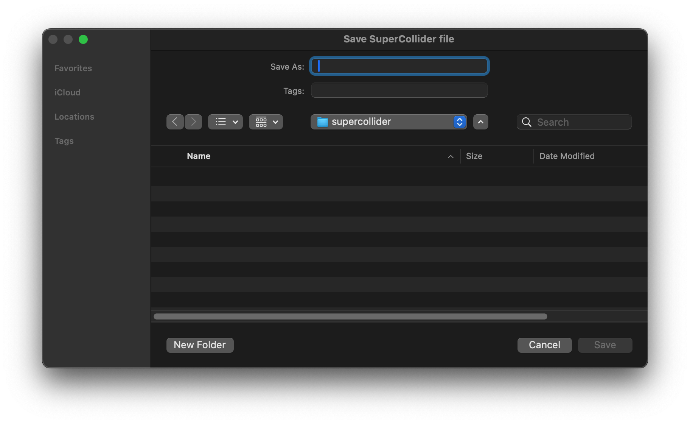
Exports partials in the SDIF (Sound Description Interchange Format), compatible with Loris, SPEAR, and other analysis tools.
A dialog lets you choose the frame type: - 1TRC — standard sinusoidal tracks (compatible with most tools) - RBEP — Loris bandwidth-enhanced partial format (preserves noise residual data)
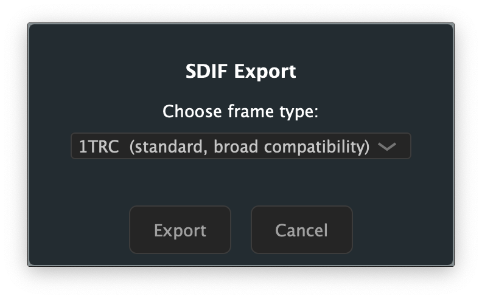
Exports partials as a JSON file, useful for data interchange with custom tools or scripts.
Each partial is represented as an object with metadata (id, start time, duration, color) and an array of breakpoints (time, frequency, amplitude, bandwidth, phase).
Renders the current resynthesis to an audio file — you hear exactly what you export. Muted partials are excluded; if any partial is soloed, only soloed partials are rendered.
Invoke via File → Export → Export Audio…
A dialog opens with a horizontal tab strip for choosing the output format. The default tab is AIFF.
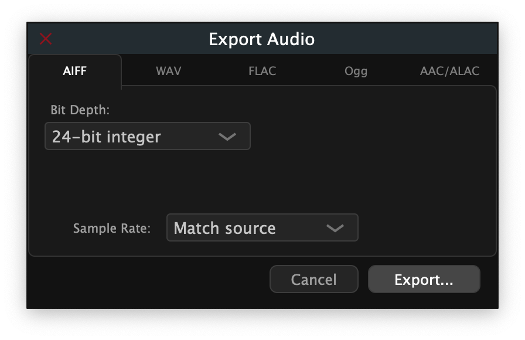
| Tab | Format | Notes |
|---|---|---|
| AIFF | Audio Interchange File Format | Bit depths: 16-bit int / 24-bit int / 32-bit float |
| WAV | Waveform Audio | Bit depths: 16-bit int / 24-bit int / 32-bit float |
| FLAC | Free Lossless Audio Codec | Bit depths: 16-bit / 24-bit; Compression 1 (fastest) – 8 (smallest) |
| Ogg | Ogg Vorbis (lossy) | Quality slider 0.0 (lowest) – 1.0 (highest); default 0.5 |
| AAC/ALAC | Apple lossy / lossless | macOS only. Toggle between AAC (128 – 320 kbps) and ALAC (16 / 24-bit lossless) |
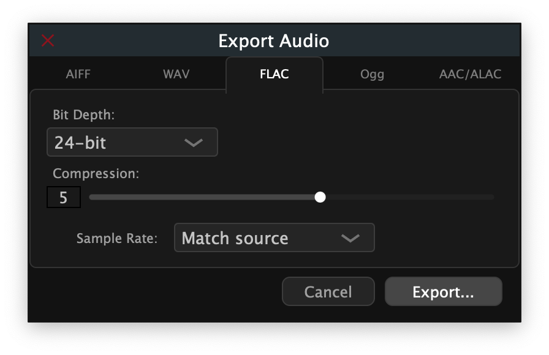
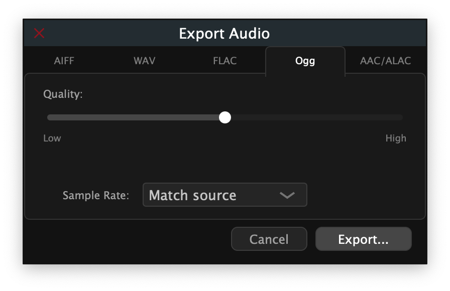
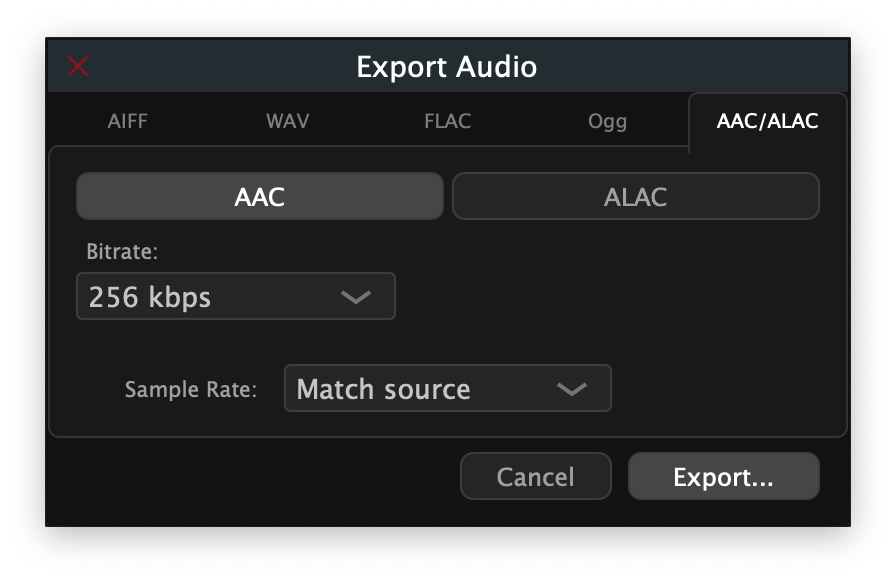
Note: The AAC/ALAC tab appears only on macOS. On other platforms, FLAC (24-bit, compression 5) is the recommended lossless format.
A Sample Rate selector below the option panels offers: - Match source — uses the sample rate of the analyzed audio file (recommended) - 44 100 Hz / 48 000 Hz / 96 000 Hz — override if your target system requires a specific rate
Click Export… to open a file save dialog. The file extension filter matches the selected format automatically. The render runs immediately after you confirm the file path; progress completes silently for typical analysis lengths (under 30 s). On completion the file is ready to use in your DAW, notation software, or Csound workflow.
Click Cancel to dismiss the dialog without creating a file.
| Action | Shortcut |
|---|---|
| New window | ⌘N |
| Open project | ⌘O |
| Analyze Audio… | — |
| Save | ⌘S |
| Save As | ⌘⇧S |
| Close window | ⌘W |
| Action | Shortcut |
|---|---|
| Undo | ⌘Z |
| Redo | ⌘⇧Z |
| Cut | ⌘X |
| Copy | ⌘C |
| Paste | ⌘V |
| Delete | Delete or Backspace |
| Select All | ⌘A |
| Deselect All | ⌘⇧A |
| Invert Selection | ⌘⇧I |
| Bridge Partials | ⌘J |
| Crossfade Overlap | ⌘⇧J |
| Stretch / Compress… | T |
| Action | Shortcut |
|---|---|
| Zoom In | ⌘= |
| Zoom Out | ⌘− |
| Zoom to Fit | ⌘0 |
| Show/Hide Panel | ⌘⌥S |
| Action | Shortcut |
|---|---|
| Play / Pause | Space |
| Loop toggle | Transport menu |
| Set In Point to playhead | ⌥I |
| Set Out Point to playhead | ⌥O |
| Set In/Out from Selection | ⌥S |
| Action | Shortcut |
|---|---|
| Minimize window | ⌘M |
| Action | Key |
|---|---|
| Switch to Select mode | V |
| Switch to Direct Select mode | A |
| Action | Key |
|---|---|
| Pan left / right | ← / → |
| Pan up / down (frequency) | ↑ / ↓ |
| Pan frequency by page | Page Up / Page Down |
| Jump playback to start / end | Home / End (or ⌘← / ⌘→) |
| Zoom frequency in / out | scroll |
| Zoom time in / out | ⌘+scroll or ⌥+scroll |
| Zoom both axes | pinch (trackpad) |
| Pan time | ⇧+scroll |
PartialFKR is open-source software distributed under the AGPLv3
license.
Source code and issue tracker: github.com/ideocentric/partialfkr